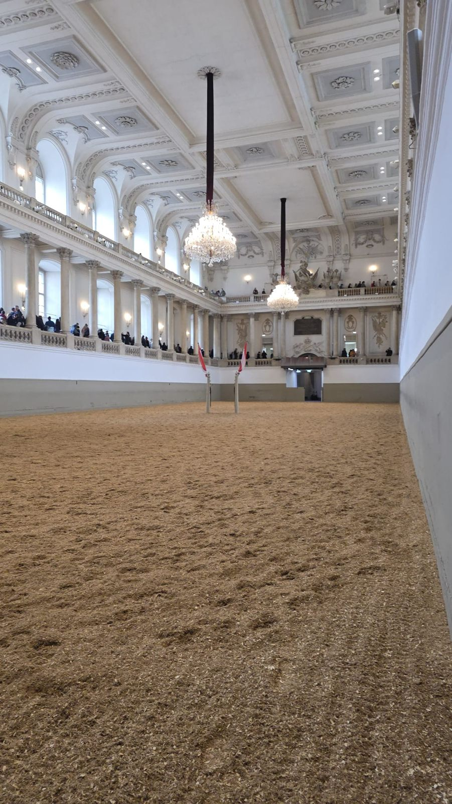
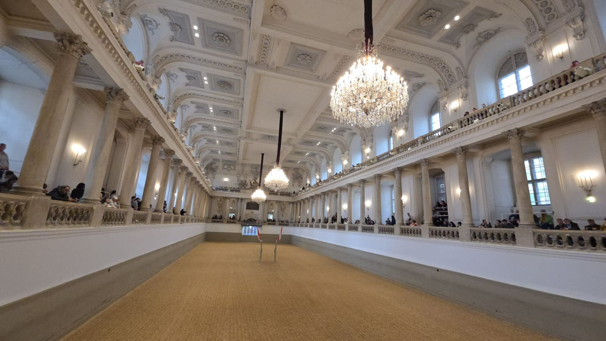
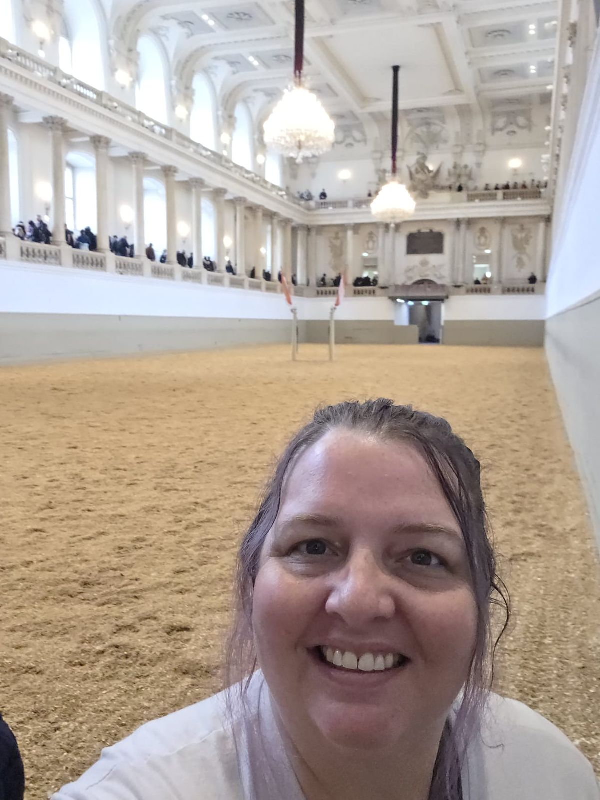

Journey 04 · Wien Note 2 of 8 Field Note
Vienna: Dancing White Horses and Chandeliers
White walls, hand painted with delicate motifs and swirling designs. Columns, tall windows letting the light pour in, giant fireplaces carved with cherubs and lions. Chandeliers hanging from the ceiling over a long oval floor, the Baroque trappings of the palace are all around us as we take our seats. Anywhere else, and this would be a ballroom or grand audience hall, maybe turned into a fancy dining restaurant with white tablecloths and a wine list longer than my arm.

But at the Hofburg Palace in Vienna (built 1729–1735), the floor is not tiled for dancing and dining. Instead it is covered in a mixture of sand and carpet shavings, the perfect surface to optimize grip, cushioning, and shock absorption for the Lipizzaner stallions.
Visiting the Spanish Riding School has long been a dream of mine, and on my visit to Vienna it was realized when I had the opportunity to watch a training session with music. While not a full show, I was able to see how this historical school trains the “dancing horses.”
The View from the Balcony
There are no photos allowed during the session, so I only have empty arena photos. This ended up allowing me to fully live in the moment and appreciate the horses and riders without the distraction of a phone or camera. The classical music was quiet, but carried easily because the entire hall was quiet. There were occasional gasps from the crowd at an unexpected move, or murmuring when something was especially well done, but the atmosphere remained controlled and intentional. Hundreds of people, all watching the same thing, all just as captivated.

The riders were quiet as well. No called commands, no jangle of saddles or crack of a riding crop. They sat lightly in the custom saddles, giving cues that were almost invisible, occasionally patting the stallion’s arching neck for a particularly well-done moment.
I watched as horses and riders moved through complicated patterns around the arena, never seeming to speak to one another, but also never running into each other or needing to stop and wait. The flow was nearly constant, the group clearly having worked together many times before. Each rider was attentive to their own horse, adjusting constantly, while also remaining aware of all those around them as hundreds of us watched. On paper this was just a morning practice, but in person it felt like its own kind of performance.
The Horses
Contrary to popular belief, the training of these horses is not based on battle movements. The riders train them as athletes, using exercises to increase suppleness, balance, and engagement. Most of the movements are based on natural horse behavior, with one exception, the tempi change, where a cantering horse appears to skip as it changes its leading leg.
Training is built around an ask-and-reward system, not tools or punishment. Each rider’s uniform even contains a “secret” pocket, a deep fold in the tail of the riding coat filled with sugar cubes. At one point, I watched a rider begin training his stallion in “Airs Above Ground,” first working in-hand beside the horse before attempting the movement mounted. Based on the number of sugar cubes being handed out, I assume there is an entire smaller ballroom somewhere dedicated to sweet treats.
In practice, rider and horse move as one. There is no sense of domination, only a kind of ongoing conversation built on subtle cues and constant adjustment. Each session also includes a senior rider and stallion alongside younger pairs, offering guidance through presence rather than interruption.
In the first session, a nearly solid black, sixteen-year-old Lipizzaner served as the lead stallion. While the breed is born dark, they gradually lighten to the white color they are known for. This stallion was a rarity, and striking to watch. His custom saddle was white and gold, marking the status of both horse and rider.
The Riders
For most of the school’s 436-year history, the riders have been men. In 2008, the first two women were accepted after passing the entry exam, and there were several women riding in the sessions I watched. Admission is based on merit, and only eighteen riders are accepted at any one time. Training can take ten to twelve years, or longer, before a rider is fully qualified.

What stood out most was how the school approaches training. Each stallion is matched with a rider from a young age, and the pace of progress is set by the horse, not the rider. The horses are always prioritized. Learning happens largely through oral tradition and experience, with younger riders learning from senior riders, and senior riders carrying forward knowledge passed down over generations. It requires not only skill, but a willingness to dedicate a life to the practice.
The View from the Balcony, again
In my leadership studies, I learned about the “balcony view,” the practice of stepping back from immediate action to gain a broader perspective. Sitting in the same space where the King once observed, watching each rider still salute as they entered the arena, I found myself thinking about that idea.

What felt effortless from moment to moment revealed itself as something much more structured. Each rider was not only working with their own horse, but constantly adjusting in response to the others, even if it was invisible to the audience. The spacing, the timing, the flow across the arena, none of it was accidental. It only appeared that way. From above, it was clear that it was a system.
The same was true of the horses and riders themselves. What looked like instinct or natural grace was the result of generations of knowledge and years of repetition and attention to detail. Small cues, small corrections, built over time into something that reads as seamless.
Sitting there, it was hard not to think about how often I mistake something well-practiced for something effortless. Or how often my own well-practiced efforts are seen as natural ability instead of the result of years of work.
I found myself thinking about my family while I am gone, and how much work it actually takes to keep everything moving smoothly. The schedules, the coordination, the constant small adjustments that no one really sees unless they have to step in and do it themselves. It has become something they are discovering for themselves, no matter how many times we talked about it before I left.
I thought about the times I compare myself to others, and the times I sit with my teens and remind them that no one wakes up knowing how to do anything well. That every athlete, every creator they admire, learned through repetition and failure.
I thought about the friends I encourage to keep going. The papers I help read, the creative work I support. The reminder that what looks like an overnight success rarely is.
It is a lesson I repeat often. Just not one I seem to apply to myself.
Mentioned in
Originally published at fieldnotesfromabroad.com/2026/04/12/vienna-dancing-white-horses-and-chandeliers/